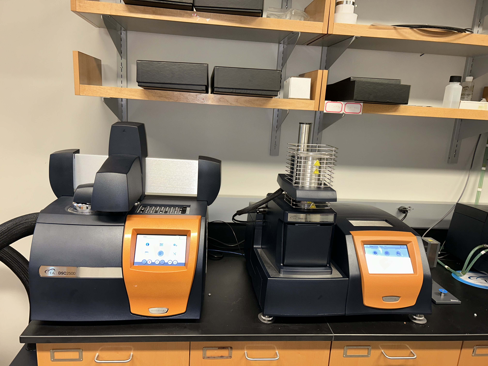

BNACC
Bio-Based Nanomaterials and Advanced Composites Center (BNACC)

Advanced materials, including high-performance polymers and composites, have been at the forefront of structural materials
in military applications, aircraft, manufacturing, construction, and other areas. These advanced materials have good
high-temperature stability, excellent dimensional stability, and excellent mechanical, electrical, and chemical resistance
properties. BNACC focuses on examining and characterizing polymers (synthetic and natural), composites, and nanocomposites for
applications in the above industries.
BNACC uses the thermal analysis suite (TAI) suite to conduct glass transition temperature studies, obtain thermal degradation
properties, observe thermal expansion, and study the flow properties of polymeric materials. Thus, the goal of the BNACC is to
study high-performance polymers, composites, and bio-based composites. Please see additional information below about the
services, differentiators, and facilities & equipment the BNACC can offer to surrounding polymer/plastic businesses.
SERVICES
DIFFERENTIATORS
FACILITIES & EQUIPMENT